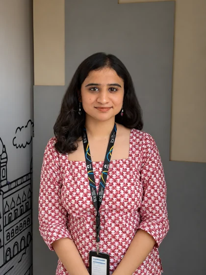

COMPUTER SCIENCE · DATA SCIENCE
Hey, I'm Anubha.
I build with data, think in systems and design with curiosity.
I'm a Computer Science graduate currently working at Tata Consultancy Services. My interests lie in data engineering, analytics, financial technology and building useful digital experiences.
With experience spanning software development, product analytics and UX design, I enjoy understanding problems from different perspectives.
A SYSTEMS VIEW
My world of data.
From raw data to structured systems and meaningful insights.
DATA FLOW / CONCEPTUAL A PRACTICE IN PROGRESS
INSIGHTSDecisions with context.
source.connect()data.transform()warehouse.load()analytics.execute()insights.generate()
PROFICIENCY KEY Hands-on / used Practising Currently exploring
ADDITIONAL DEVELOPMENT TOOLKIT
SELECTED WORK
Things I've built.
THE WORK SO FAR
Where I've worked.
A path through software, product thinking and financial services.
AWARDS & LEADERSHIP
A few things I'm proud of.
BEYOND THE BUILD
Good systems need
a wider point of view.
Outside of work, I like to travel, explore design, and eat sushi.
A little more about meTRAVEL · DESIGN · EVERYDAY JOYSFIELD NOTES / 01—11
A WINDOW INTO LIFE OUTSIDE THE SYSTEMS